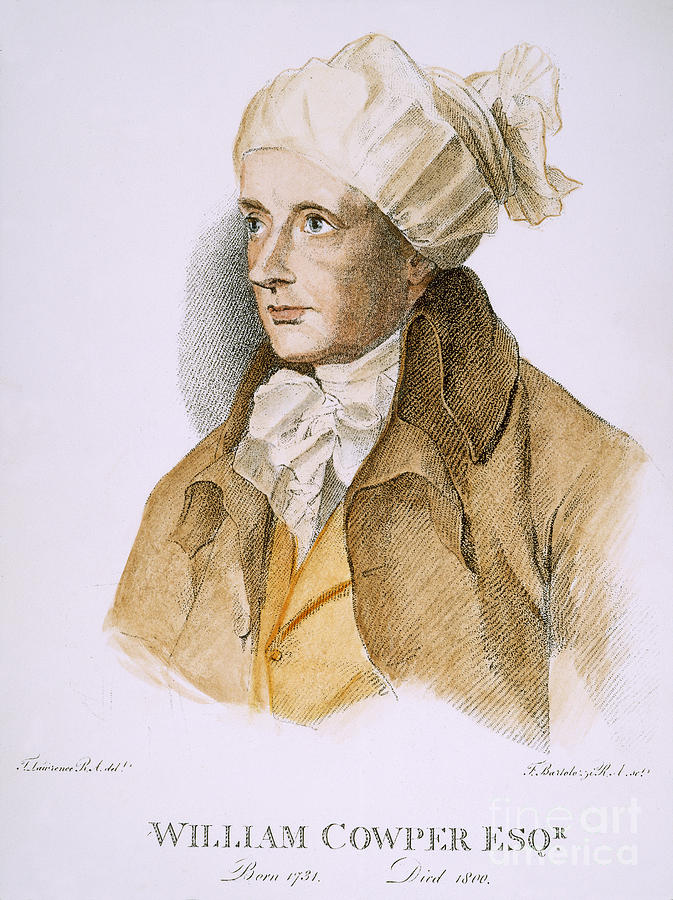

威廉古柏 William Cowper (1731-1800)

诗人小传
英国是产生杰出教会诗人最多的国家，而威廉古柏（William Cowper）是其中特别经历到神用救赎大爱把人从软弱无能光景中，救拔出来的一位。他在一七三一年出生于伯克翰斯德（Berkhampstead），家世显赫，他的父亲是家中第一位蒙召事奉主的人，在圣公会任牧师职份；他的伯父则因为替国家建立了特殊的功勋，所以被封为侯爵。威廉古柏从幼小就生长在这样一个特殊的家庭中，并在英国传统教育的熏陶中长大。他的秉赋非常聪明，但意志却十分脆弱，缺乏刚毅果断的气质。当他才六岁时，他最亲爱的母亲离开世界，古柏原本非常脆弱，骤然失去了他惟一所依所爱的，使他的精神受到很严重的打击。从此以后，他变得沉默寡言，多愁善感，常常可以一连多日，静坐一隅，不言不笑。另一方面，在他内心深处，却非常高傲，他常有一种感觉：在整个世界中，很难找到一些智慧品格能和他相配，与他交谈的人，这一个感觉使他离群孤单。上小学的时候，因着他性格特殊，常饱受同学的讥笑和欺凌，更使他变得愤世嫉俗，踽踽独行。
长大之后，他学习法律，二十三岁时，就取得正式律师资格，那时律师在社会上是很有声誉，并且受人尊敬的，一般人不容易得着这一个资格。过不久，透过一位亲戚的介绍，而担任上议院的秘书。但这些成就仍不能使他心中有喜乐和平安。相反地，愈过愈觉得难以和人相处，愈加感觉精神上的痛苦和心中的孤单。这个感觉强烈到一个地步，甚至使他不能忍受，几度想要自杀，了结一生。他的好友怕他轻生，（连他自己也没有把握能不能控制自己）。就安排他住进考顿医生（Dr．Cutton）家中的疗养院休养。所以在一七六三年底，他就迁到阿尔本斯（Albans）考顿的家中去了。
经过一段相当长的休养之后，精神稍有进步，但仍不免常被忧郁症所攻击，身心饱受折磨，觉得人生毫无意义，人活着除了痛苦之外，就无任何乐趣可言。谁能把他从软弱无能、心如槁木死灰的光景中，救拔出来呢？但有一天，神荣耀释放的时刻来到了。
那一天，古柏无意中读到罗马书三章二十五节，这一段圣经说：“神设立耶稣作挽回祭，是凭着耶稣的血，藉着人的信，要显明神的义，因为祂用忍耐的心宽容人先时所犯的罪……”这几句话忽然在他眼前放大了，满带着能力，一直刺入他脆弱的心房。救主的荣耀光辉，将多少年来盘踞在他心头的忧虑黑影，一扫而空。后来他自己说到这一时刻：“我立刻就得着一股奇妙的能力，叫我敢接受这段话和这段话里面所包含的一切深奥意义，并且深信不疑。当我这样相信，并向主认罪祈祷时，有一个公义的太阳，在我里面冉冉升起。祂的光辉照耀，充满了我的全人，使我久已冰凉、冷酷的心，忽然被祂的温暖和慈爱所熔化。我也在主的光中，看见祂为我所付上的赎价，和祂为我所完成的救赎，是何等的完全，并且满带着天上的权柄。藉着祂的宝血，我的罪已被洗净，因为这一个赦罪的救恩，是建立在祂完全、丰满的公义上面。这是何等奇妙的救恩啊！一霎时间，我就完全得着了这一个荣耀的福音。若是没有神大能的手托住我，我当时一定会被圣灵的喜乐和感恩的眼泪所淹没了。”
在他得救之后，因为里头明亮了，使他的生活、为人都有了剧烈的改变，连他最好的朋友，也是惟一的知己：福赛特（Mr.Fausett）都不能接受这个事实。福赛特以为惟有他最深知古柏，他觉得像古柏这样有智慧的人，绝对不会那样轻易地相信这种“无意义的”基督教。他认为古柏是因为受到失恋和失怙的双重刺激，精神分裂了，才投依信仰的。他这种看法当时流传在他的朋友中间，所以好多人说，威廉古柏是个精神病患者。这句话或许对了几分，但有一事实是人所无法否认的，就是他确确实实地被主大能无穷的生命挽回来了，他得着了新的心、救主的大爱、和主伟大的生命，在他里面有一个不断涌流的泉源。使他无论在什么地方，无论遇见什么人，无论在什么时候，都没有办法不在神圣大爱中，谈论到他所遇见的救主，这是他有生之年，第一次深深感觉到说不出来的平安和喜乐。为此他曾在他的名著The Task第三卷中写下很有名的一段诗：
我如迷群之鹿，多日流离，
疲倦困顿，无情箭矢齐集我身，
肋间流血，残喘苟延，
所求不过一死，生命安息离我远远飞逝。
却有一位亲来寻找，祂曾亲尝中矢，
为猎者凶狂伏击，
祂手、祂足、祂肋伤痕依稀！
祂来轻柔抚摸，拔除我身箭枝，
痊我伤痛，医我病患，赐我生命喜乐无穷尽。
当他从主得医治时，连医生都不相信。考顿本人也是一位爱主的弟兄，也信不过主的话语有这么大的力量，能把一个忧郁厌世的病人扭回来，而且喜乐满益！考顿起初还怀疑这恐怕是回光返照，直到几年以后，他才信这真是主作的。
痊愈之后，他仍在那里住了一段时间，直到一七六五年才离开，去亨丁顿（Huntingdon）继续休养。他实在没有想到，就在这一次变动中，天上的父亲为他设计了最智慧最仁慈的安排——正当他孤单无助时，他遇见了恩明牧师（Rev.Morley Unwin）。
恩明牧师非常认识主，对人很有爱心，他把古柏视如己出；恩明太太也是属灵生命很丰盛的人，她对古柏一生的影响更大。在那时期中，他们扶持古柏过信心生活，引领他进入更深的生命（古柏在主里面的长进很快）；又使古柏享受到从未有过温暖的家庭生活。两年以后，恩明牧师因骑马发生意外，重伤去世。这一次事故后，他随恩明夫人搬到白金汉郡（Buckinghamshire）的奥尔尼（Olney）去，这是一个山明水秀，风景绮丽的地方。在天父另一个智慧和慈爱的安排之下，他认识了伟大的牛顿弟兄（John Newton，1725-1807）。
我们知道，牛顿弟兄是一位被主大用的仆人。在当时教会中，他的影响力很大，因为牛顿蒙恩得救的故事和他那样丰富的属灵经历，使他成为一个最能帮助人的执事。古柏和牛顿一见如故，立刻成为知心密友。他们在一起有二十年之久，常在一起散步、祷告、读经、默想，并一同在牛顿的牧区中服事主。他经常在那里传扬信息，有时也在聚会中带领诗歌和祷告，他也教圣徒读圣经，特别欢喜探望一些贫穷困苦的人。因他自己悲惨的经历，使他深深领会、体恤他们的痛苦。
古柏弟兄虽然离开律师生活已久，但他真正的才华是任何力量所无法遮盖的。那时，他已成为英国非常杰出的诗人，所以，牛顿弟兄就劝他把写诗的才华用在圣诗上。牛顿本人也是伟大的诗人，不久后牛顿和古柏合作出版了一本奥尔尼（Olney）诗集。古柏所写的诗歌要比他的著作The Task好得多，这些诗奠定他在圣诗中的地位。他一生的工作随着他短暂的年日很快的过去了，但是他留下的圣诗在神儿女中经常因信说话呢！
那时英国社会正在文学复兴之时，有很多伟大的文学家和诗人兴起来，而那些诗人中，同时又能写圣诗的几乎是没有。正如蒙哥马利（Montgomery）所说的：“只有威廉·古柏和罗柏·伯利其（Robert Bridges）两人是能同时在这两方面齐名。”他是英国伟大的诗人，也是英国教会中伟大的诗歌作者。
威廉古柏在那时写了六十八首诗歌，有几首诗歌是在他经过严重的精神衰弱之后所写的。因为在这段时间，他特别对神有更深刻的属灵经历和认识，而使他的诗歌更增加了特有的风格，别人无法效法其优美。最早的一本诗集是在一七七九年出版的，与牛顿的作品合出，共有二百八十首，称作“奥尔尼诗集”。这本诗集一出版，就在英国和美国成为一时最畅销的诗集。但对古柏弟兄来说，他写这些诗歌，主要是为着奥尔尼这个地方圣徒的需要，他从未想到圣灵竟会这样使用他的诗歌，使各处神的儿女们，都因着他所写的诗而蒙到了说不尽的恩典。
因为他以往曾屡次患精神衰弱症和他孤僻的性情，所以有很多人都攻击他，甚至论断他的诗歌；说他的诗充满了朦朦胧胧，含意不清的词句，也有人觉得他的神学有问题，也有人说他的诗歌只不过说出他个人的愁苦，没什么灵感。甚至有人觉得牛顿弟兄不应该把古柏所写的诗歌放在这本诗集里面，而这一些毁谤和攻击只有使古柏更加依靠主，并且使他的作品更显出及发挥他里面属灵生命的美丽。实在说来，他的诗歌是那样充满了吸引力，特别是他的几首杰作，更无人出其右，也无一作品可以代替，而成为后来教会顶丰富的属灵产业。
他的诗歌有一个特点，就是他许多诗歌都有同一个倾向；把福音的真理，交织在众人日常最实在、也最平凡的生活里，引领我们进入属灵生命的实际。他尽量用简单的句子，使众人容易了解诗歌的意义。这是一件大事，把属灵的实际带到我们平凡的生活里来，使我们觉得福音和生命，不再是那么虚无飘渺，不可捉摸；相反地，是那样的实际，而且能应用在日常生活当中。